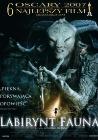

TOP 10 FILMÓW
1.
Władca Pierścieni: Powrót króla (2003)
The Lord of the Rings: The Return of the King
2.
Władca Pierścieni: Dwie wieże (2002)
The Lord of the Rings: The Two Towers
3.
Iluzjonista (2006)
The Illusionist
4.
Piraci z Karaibów: Skrzynia umarlaka (2006)
Pirates of the Caribbean: Dead Man's Chest
5.
Harry Potter i Insygnia Śmierci: Część II (2011)
Harry Potter and the Deathly Hallows: Part 2
6.
Siedem minut po północy (2016)
A Monster Calls
7.
Piraci z Karaibów: Na nieznanych wodach (2011)
Pirates of the Caribbean: On Stranger Tides
8.
Atlantyda - zaginiony ląd (2001)
Atlantis: The Lost Empire
9.
Nieśmiertelny (1986)
Highlander
10.

Labirynt fauna (2006)
El laberinto del fauno